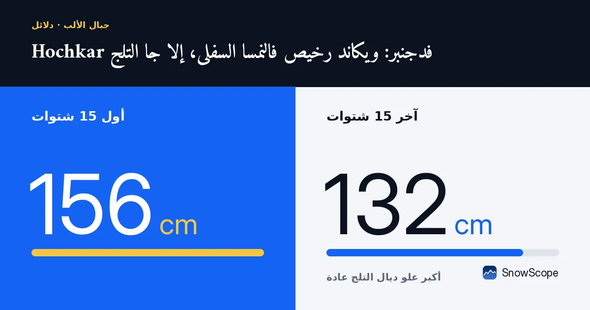

Hochkar فدجنبر: ويكاند رخيص فالنمسا السفلى، إلا جا التلج
Hochkar تقدر تكون صلاح لرحلة ويكند ديسمبر من فيينا، لكن التلج ما مضمون. فـ 15 ديسمبر عادي، الوسط ديال الجبل (1583 م) فيه 38 سم، و 63 % ديال الشتوات اللي فاتو تاقو 30 سم ولا أكتر فـ الأسبوع ديال 15-21 ديسمبر. الحال ديال الثمن واضح: التاكيت ديال اليوم فـ الإنترنيت ديالهم ابدا من 32,90 يورو فـ الأيام الهادية.
شوف توقعات التلج مباشرة ديال Hochkar فالتطبيق ديال SnowScopeالعلو ديال التلج، التنبيهات والخريطة 3D، فابور.
واخ التلج الكتيف يكون فـ ديسمبر
Hochkar يصعد لـ 1788 م، أعلى التلفريك فـ النمسا السفلى. فـ 46 شتوة ديال السجل ديالهم، الأرض ما كانت حاتة أبدا فـ القاعدة (1378 م) فـ 15 ديسمبر، واخا دايما فيه شي تلج. اللي مهم هو واخا فيه كيفاية باش تتلجا.
الثقة تتبدل فـ السنة. فـ الأسبوع الأول ديال ديسمبر (1-7 ديسمبر)، غير 43 % ديال الشتوات عندهم 30 سم ولا أكتر فـ القاعدة. بـ وسط ديسمبر النسبة هاي تطفز لـ 52 %، و فـ أسبوع الميلاد توصل لـ 61 %. فـ الوسط ديال الجبل، السان أحسن: 59 % بـ 8-14 ديسمبر و 74 % بـ أسبوع الميلاد.


الارتفاع هو اللي يفرق
القمة ديال الجبل تحكي حديثة أخرى. فـ 15 ديسمبر عادي، الذرة (1788 م) عندها 49 سم، ضد 32 سم فـ القاعدة و 38 سم فـ الوسط ديال الجبل. فـ 72 % ديال الشتوات الذرة عندها 30 سم ولا أكتر فـ الأسبوع ديال 15-21 ديسمبر، توصل لـ 80 % فـ أسبوع الميلاد.
القاعدة هي النقطة الضعيفة. فـ السنين الرقيقة (1 فـ 10)، تكون غير 8 سم هناك فـ 15 ديسمبر. اللي تمشي، تلعب التلفريكات والبيستات ديال الفوق أولا، واخا الغطاء يكون أحسن.
الميول ديال الوقت الطويل
التلج ديال ديسمبر فـ هاد الجبل تلقى يقل. فـ الوسط ديال الجبل، المتوسط فـ أول 15 شتوة ديال السجل (1980-81 لـ 1994-95) كان 51 سم، لكن فـ آخر 15 شتوة (2011-12 لـ 2025-26) نزل لـ 29 سم. الشتوة اللي فاتو عندها غير 2 سم فـ 15 ديسمبر و 3 سم فـ ليلة عيد الميلاد.
هاد الحال مهم باش تخطط. أسبوع ديسمبر موثوق هنا دابا هو الاستثناء. الشباك هو أسبوع الميلاد فـ قدام، واخا أنماط التلج القديمة يخدمو 74 % سان ديال 30 سم فـ الوسط ديال الجبل.
الثمن والوقت
Hochkar تخدم أسعار ديناميكية بـ كاملهم فـ المتجر ديالهم فـ الإنترنيت. التاكيت ديال اليوم ديال الكبار فـ ديسمبر 2026 تاقو من 32,90 يورو فـ الأيام الهادية لـ 47,90 يورو فـ الأيام المشغولة. الموقع الرسمي يقول الأسعار فـ الإنترنيت أرخص بـ حوالي 15 % من اللي تشري من الشباك.
ما فيها سعر متعدد الأيام معلن فـ الرسمي، وهاد الحال معقول: أكتر الزوار يجيو ليوم أو ويكند. قرر فـ نفس الأسبوع اللي تخطط فيه، شوف التوقعات و SnowScope، بـ قعدة احجز يوم هادي فـ الإنترنيت.
Lachtal: البديل اللي جنب
Lachtal فـ Styria تقعد 50 كم بـ عيد، عندها قاعدة أعلى (1572 م) و قمة أطول (2199 م). الوسط ديالها (1885 م) عندها 46 سم فـ 15 ديسمبر عادي و 72 % ديال الشتوات عندهم 30 سم فـ الأسبوع ديال 15-21 ديسمبر، شي شوية موثوق من Hochkar. التاكيت ديال اليوم يكلف 62 يورو.
باش رحلة يوم رخيصة من فيينا، Hochkar تربح فـ الثمن. باش ويكند اللي التلج هو الأساس، ارتفاع Lachtal يعطي سان أحسن، لكن بـ ثمن أعلى.
الشحال باش تديرها
خطط متأخر، ما قبل. ديسمبر الأول هو قمار؛ قصد الأسبوع اللي قبل الميلاد ولا بـ قعدة. احجز فـ الإنترنيت و اختار يوم سباتي واخا الأسعار تكون أقل و التوقعات ديال التلج تكون محكمة.
قبل ما تديري نحو الجبل، شوف النشرة ديال الانهيارات من Lawinenwarndienst Niederösterreich (lawinen.report) اللي خطرت تخرج من البيستات المحددة. الطريق هي طريق جبل: جيب الكاوتشو ديال الشتا بـ قعدة اللي فيها تلج.
نصايح للي كيتزلجو
- شوف التوقعات ديال الأسبوع اللي تفكر فيه، ما شهر كاملة. ديسمبرات رقيقة دابا عادي هنا؛ احجز غير واخا SnowScope يقول 30 سم ولا أكتر فـ الوسط ديال الجبل.
- احري من الإنترنيت و اختار يوم سباتي هادي. الأسعار الديناميكية أقل واخا الطلب يكون قليل.
- ابدا من التلفريكات ديال الفوق. القمة ديال الجبل هي أموثوق ارتفاع فـ ديسمبر.
- جيب الكاوتشو ديال الشتا و شوف النشرة ديال الانهيارات اللي خرجت من البيستات.
- اللي ديسمبر يبان رقيق، شوف يناير، واخا العلو ديال التلج يتوصل لـ 61 سم فـ الوسط ديال الجبل.
على هاد الأرقام
العلو ديال التلج فالمحطات هو أكثر تلج فالجهة الفوقانية فالتاريخ المكتوب؛ هادو تقديرات لمنطقة، ماشي قياس فنقطة وحدة. التوقعات يمكن تتبدل. ديما شوف النشرة الرسمية ديال الانهيارات قبل ما تخرج من البيست.
النشرات الرسمية ديال الانهيارات: Lawinenwarndienst Niederösterreich
كيفاش تستاشهد بهاد المقال
للبحث، التعليم ولا الصحافة: الأرقام والرسومات تقدر تعاود تخدم بيهم بحرية تحت CC BY 4.0 مع هاد الاستشهاد.
SnowScope (2026), Hochkar فدجنبر: ويكاند رخيص فالنمسا السفلى، إلا جا التلج, https://snowscope.app/blog/ar/2026/11/hochkar-december-skiing-vienna-weekend-budget.html, تشاف ف 2026-11-14
SnowScope (Atlas Labs). (2026, November 14). Hochkar فدجنبر: ويكاند رخيص فالنمسا السفلى، إلا جا التلج. SnowScope snow reports. https://snowscope.app/blog/ar/2026/11/hochkar-december-skiing-vienna-weekend-budget.html
BibTeX
@misc{snowscope2026hochkardecemberskiingvie,
author = {{SnowScope (Atlas Labs)}},
title = {Hochkar فدجنبر: ويكاند رخيص فالنمسا السفلى، إلا جا التلج},
year = {2026},
month = nov,
howpublished = {\url{https://snowscope.app/blog/ar/2026/11/hochkar-december-skiing-vienna-weekend-budget.html}},
note = {Published 2026-11-14 20:11 UTC; accessed 2026-11-14}
}· CC BY 4.0 · الطريقة، الداتا والأدوات →
Hochkar: التلج والحرارة حسب العلو، هاد الشتا مقارنة مع اللي فاتت (الأدوات) →
تابع Hochkar
فابور: ميساج ملي يجي التلج، والتوقعات كل صباح.